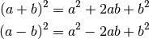
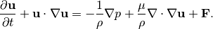

CFDwavemaker
Table of Contents:
Introduction
Build Instructions
Installation
Input File Format
Input File Examples
Wave Theories
Linear Potential Wave Theory (Irregular waves)
Second order Potentiaon Wave Theory (Irregular waves)
Stokes 5th Regular Wave Theory
Piston Wavemaker Theory
Lisence
CFDwavemaker
Docs
»
Wave Theories
View page source
Wave Theories
¶
Linear Potential Wave Theory (Irregular waves)
¶
This is a test

Second order Potentiaon Wave Theory (Irregular waves)
¶
Stokes 5th Regular Wave Theory
¶
Piston Wavemaker Theory
¶
conservation of momentum
:
